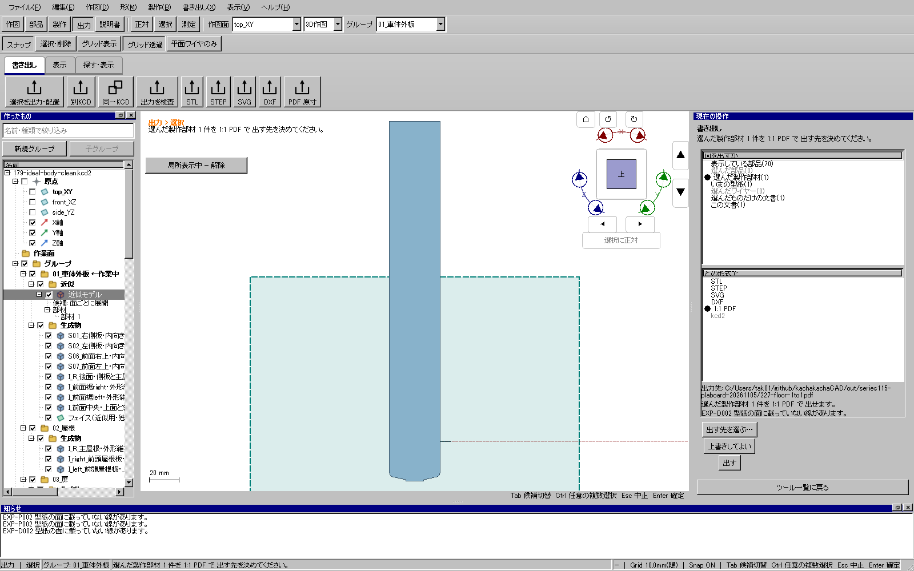
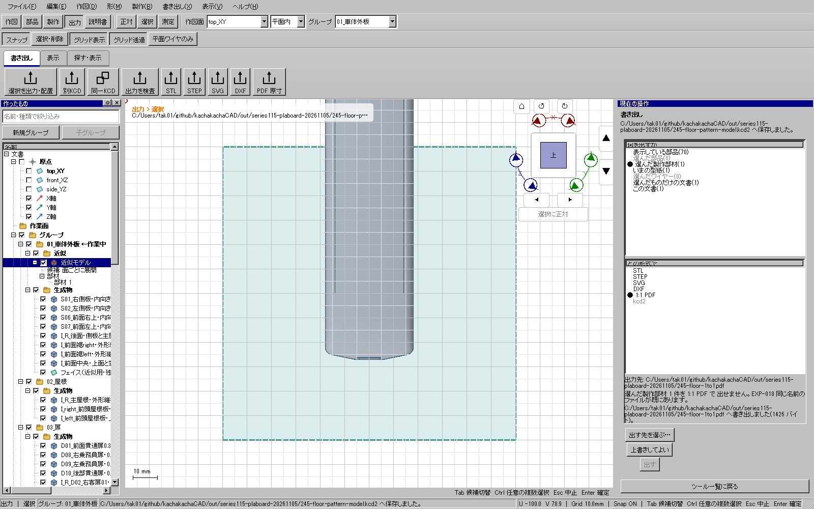

2026-11-09。限定した私有UI変換の修正は重点検証済み。全体・配布版検証と公開はこれから行う。
公開更新2の実UI227では、床板のフェイスから製作部材と型紙を作れたが、SVG・DXF・PDFの書き出しが 「型紙の面に載っていない線」として拒否された。nativeで測定した元フェイスのZ偏差は約7e-11 mmで、実際には平面だった。
平面へ戻す角度を法線のZ成分のacosだけで求めていた。ほぼ上向き・下向きの面では、 法線の長さに残ったごく小さな丸め誤差が偽の傾きへ拡大し、長い部材に平面外の座標が生じていた。 外積の長さと内積のatan2で角度を求め、存在する回転軸は微小でもその方向を保持する。
既存の剛体回転だけを変え、曲線の種類・長さ・穴を保持する。非平面の線を強制投影せず、 書き出しの拒否条件・精度・公開コアAPI・保存形式は変更しない。
ほぼ平行・反平行、わずかな傾斜、傾いた面と法線の丸め残差を含む回帰は修正前に失敗し、修正後に成功。 0/37/100%の姿勢、長さ、法線方向、従来の曲線と穴付き面・保存再読込も確認した。 関連する型紙・平面部材・固定状態・出力・PDFの5試験群が成功した。
実UI244/245で同じ失敗時の保存データを読み、型紙更新→SVG/DXF/PDFが成功。 元70部品の定義・ID・名前は不変。連続した修正候補で出力した3形式はそれぞれバイト一致した。 床板の切断寸法は34.3438×243.75 mm。円弧はSVGのArc、DXFのARCとして保持される。 読み取り専用の輪郭比較はSVG/DXF約0.000033 mm、SVG/PDF約0.000447 mm以下（有限標本の比較であり解析的最大誤差ではない）。


証拠: out/series115-plaboard-20261105/planar-pose-before-20261109、
planar-pose-final-20261109、actual-candidate13-final-floor-export-20261109、
244-floor-cut-proof.json、245-floor-original-preservation-proof.json。
車体の全製作モデル・全型紙・実工作と全体ゲートは未完了。